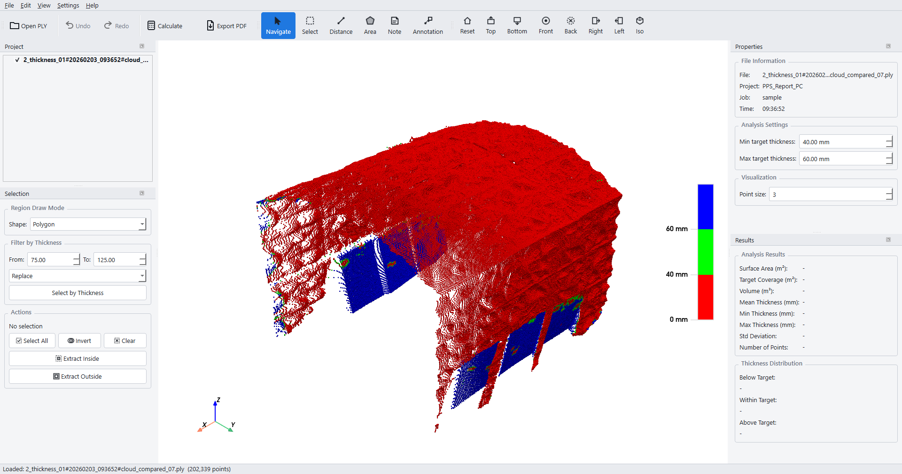
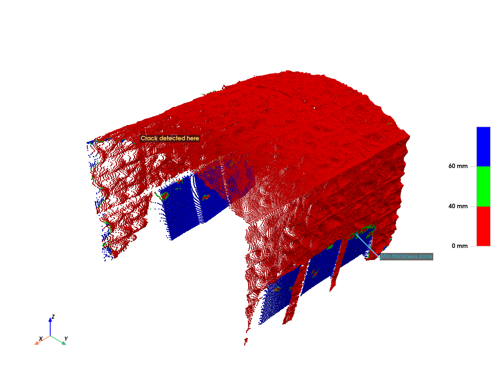
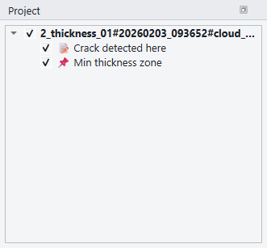
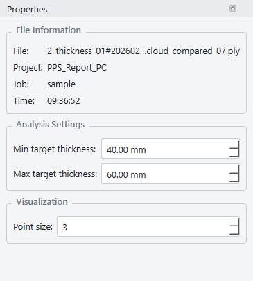
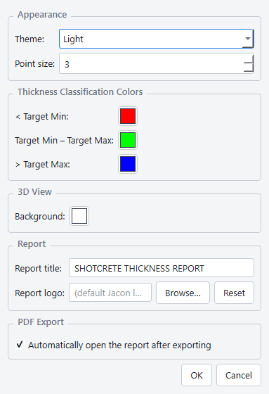

Jacon PPS Report
A complete walkthrough of the application: loading a post-processed scan, navigating and measuring in 3D, extracting segments, annotating findings, running the thickness analysis, and exporting a professional PDF report.
To prevent serious injury and machine damage, only trained personnel should install replacement parts.
Only genuine replacement parts should be used to repair Jacon machinery.
Failure to do so could result in personal injury or equipment damage.
A copy of this parts manual should be kept in the site maintenance repair document library.
1 Overview
Jacon PPS Report reads a 3D point cloud (.ply) produced by the Jacon
PPS Scan system, which scans a tunnel or mine face before shotcrete
is sprayed (the Pre-Scan, the raw excavated rock surface) and again
after spraying (the Post-Scan). The PPS Scan system computes the
perpendicular distance between the Post-Scan and Pre-Scan surfaces at
every point and writes that signed thickness value into the .ply file.
Jacon PPS Report does not perform that Pre-Scan/Post-Scan comparison itself — its job is post-processing and reporting on data that already carries per-point thickness. It colors the cloud by thickness, lets you inspect it interactively in 3D, isolate regions of interest as separate segments, measure distances and areas, annotate findings directly on the model, compute summary statistics against a target thickness range, and produce a PDF report suitable for handing to a client or QA reviewer.
The PPS Scan hardware itself is a LiDAR-based system: each Pre-Scan/Post-Scan pass takes about 50 seconds, with a rated measurement accuracy of ±17 mm and a valid thickness measurement range of 0–300 mm at up to 10 m scanning distance. Keep that 0–300 mm range in mind when reviewing results — a reported thickness far outside it (see the noise note in Calculation & Targets) points to a scan artifact, not real shotcrete.
Typical end-to-end workflow:
- Open the post-processed
.plyscan file (already carries per-point thickness from the PPS Scan system). - Review / adjust the target thickness range (Min / Max).
- Optionally select and extract one or more segments of interest.
- Measure distances or areas, and place Notes/Annotations to document findings.
- Run Calculate to get the full statistical breakdown.
- Export the PDF report (and optionally save the working session as a project file).

2 Interface Tour
The main window is built from a menu bar, two toolbars, a central 3D viewport, and four dockable panels:
| Area | Purpose |
|---|---|
| Main toolbar | Open PLY, Undo/Redo, Calculate, Export PDF |
| Tool toolbar | The six interaction tools — Navigate, Select, Distance, Area, Note, Annotation — plus quick view-orientation buttons (Reset, Top, Bottom, Front, Back, Right, Left, Iso) |
| Project dock | Tree of segments (layers) with their notes/annotations/measurements nested underneath; visibility, rename, delete, edit and move all happen here |
| Selection dock | Region-select shape, thickness filter, and segment extraction/crop actions |
| Properties dock | Loaded file information, Target Min/Max thickness, default point size |
| Results dock | Calculation output: surface area, volume, thickness statistics, and the below/within/above-target distribution |
Every dock can be dragged to a different edge of the window, floated as its own window, or hidden/shown from the View menu. If the layout ever gets into an awkward state, use View → Reset Layout to restore the default arrangement.
3 Opening a PLY File
Use File → Open PLY… (Ctrl+O) or the Open PLY button on the main toolbar, and choose a .ply file that already contains per-point thickness values computed by the PPS Scan system (the Post-Scan surface compared against the Pre-Scan rough surface — not a CAD design profile).
Filename & folder convention
If the file lives under a path shaped like …/Projects/<ProjectName>/<JobNumber>/<JobNumber>#<yyyyMMdd_hhmmss>#<SegmentName>.ply, the project name, job number, scan timestamp and segment name are parsed automatically and shown in the Properties dock, and reused to build the default PDF report filename. If the path doesn't match this convention, the file still loads normally — the project/job fields simply fall back to the folder and file names as-is.
Default target range
The initial Target Min/Max thickness is resolved automatically:
- If a
job_info.jsonfile sits next to the PLY with aparameters.target_thicknessandparameters.tolerance, the range is set to target − tolerance to target + tolerance. - Otherwise it defaults to 40–60 mm.
You can always adjust Min/Max afterwards in the Properties dock — see Calculation & Targets.
4 Saving & Opening Projects
Besides the source .ply, the application can save your entire working session — segments, notes, annotations, measurements, target range, camera position — to a .ppsproj project file, so you can close the app and pick up exactly where you left off.
| Action | Shortcut | Notes |
|---|---|---|
| Save Project | Ctrl+S | Saves to the current project path; behaves like Save As on the first save |
| Save Project As… | Ctrl+Shift+S | Always prompts for a location |
| Open Project… | Ctrl+Shift+O | Loads a .ppsproj file |
| Recent Projects | — | Submenu under File listing recently opened projects |
Once a project has been saved, exporting a PDF report from it works immediately without needing to reload the original .ply file.
6 Selection & Segments
Drawing a selection
Switch to the Select tool and choose a shape in the Selection dock:
- Polygon — left-click to add each vertex, then double-click, right-click, or press Enter to close the shape (needs at least 3 points). Backspace removes the last point while drawing.
- Rectangle — click and drag to define the box.
- Lasso — click and drag to freehand-draw the outline.
Hold Shift while closing the shape to add to the current selection, or Ctrl to subtract from it; with neither held, the new shape replaces the current selection.
Filtering by thickness
The Filter by Thickness panel lets you type a thickness range and click Select by Thickness to automatically select every point whose value falls inside it — useful for isolating under- or over-sprayed areas without manually drawing a shape.
Extracting a segment
Once you have a selection, two actions turn it into a new segment (layer):
- Extract Inside — creates a new segment from the points inside the current selection.
- Extract Outside — creates a new segment from the points outside the current selection (crop away what's selected).
The other Actions buttons — Select All, Invert, and Clear — operate on the current selection without creating a segment.
A newly extracted segment is shown on its own (every other layer is temporarily hidden) and appears as a new top-level entry in the Project tree. Notes, Annotations and measurements placed on a segment belong to it and will hide/show together with it.
7 Measuring Distance & Area
Distance
Select the Distance tool, click the first point on the cloud, move the mouse to see a live preview line and running distance, then click the second point to finish. The result is attached to the nearest segment and appears in the Project tree.
Area
Select the Area tool and draw a region the same way as a selection shape. The true surface area (not the flat projected area) is computed using Ball-Pivoting surface reconstruction (BPA) — the same method the PDF report itself uses — and is displayed on the model a few seconds after the region is closed, once the background calculation finishes.
8 Notes & Annotations
Text placed directly on the 3D view, exported together with the PDF report
Creating one
Note (N): click anywhere on the view to type text right on the spot. A Note has no 3D anchor — it stays fixed on screen regardless of how the camera moves, and attaches to whichever segment is currently visible (or the original cloud if no segment is visible) purely for organization in the Project tree.
Annotation (G): click a point on the cloud — one end is pinned to that 3D point (marked with a small colored sphere), the other end is the text label, joined by a leader line. An Annotation tracks the model as the camera orbits, and is attached to whichever segment is spatially closest to the clicked point.

Editing, moving, and deleting
Switch to the Navigate tool (V) to work with existing Notes/Annotations:
- Click directly on a Note/Annotation in the 3D view to select it (it highlights in orange), or select it from the Project tree — either way stays in sync with the other.
- Drag it to move the text to a new position; it tracks live under the cursor while dragging.
- Right-click for a context menu with Edit… (change the text/color/font size) and Delete.
- Press Delete to remove whichever Note/Annotation/measurement is currently selected.
The same Edit/Move/Delete actions are also available by right-clicking the item directly in the Project tree.
9 The Project Tree
The Project dock on the left shows every segment (layer) as a top-level row, with its Notes, Annotations and measurements nested underneath as child rows. Toggling a segment's checkbox hides or shows everything nested inside it in one action.

| Row type | Right-click menu |
|---|---|
| Segment (layer) | Rename…, Delete layer (not available for the original cloud) |
| Note / Annotation | Edit…, Move, Hide/Show, Delete |
| Distance / Area measurement | Hide/Show, Delete |
Selecting multiple rows (Ctrl/Shift-click) enables a bulk Delete action, applied as a single undo step. Notes/measurements with no owning segment (for example, after their segment was deleted) are grouped under an (Unassigned) entry rather than being lost.
10 Calculation & Targets
In the Properties dock, set Min target thickness and Max target thickness (mm) to match the design requirement. The model re-colors and the Results dock refreshes automatically about 0.5 seconds after you stop typing. Max is always kept ≥ Min automatically.
Click Calculate on the main toolbar to run the full analysis. This runs in the background so the UI stays responsive on large clouds.

Reading the Results
| Field | Meaning |
|---|---|
| Surface Area (m²) | Total reconstructed surface area of the visible cloud |
| Target Coverage (m²) | Surface area of the region that reached the minimum target thickness |
| Volume (m³) | Target-coverage area × mean thickness of that region |
| Mean / Min / Max Thickness (mm) | Statistics computed over points that reached the target thickness |
| Std Deviation | Standard deviation of thickness over the same set of points |
| Number of Points | Total point count in the visible cloud |
| Below / Within / Above Target | Point counts and percentages split by the Target Min/Max range |
The three color classes correspond to the colors configured in Settings:
- Below Target Min (default: red) — insufficient shotcrete thickness.
- Within Target Min–Max (default: green) — meets the design requirement.
- Above Target Max (default: blue) — over-sprayed beyond the target.
11 Exporting PDF Reports
Once Calculate has run, click Export PDF… (Ctrl+E) on the toolbar and choose where to save. The default filename is built from the parsed project name, job number, scan time and segment name (see Opening a PLY File).
The generated report includes:
- A snapshot of the current 3D view (including any visible Notes/Annotations and the color legend).
- The full Calculate results table and thickness distribution.
- Project/job information parsed from the filename.
- The set of segments that were visible at export time.
Settings → Preferences…, section PDF Export, and toggle "Automatically open the report after exporting". When enabled (the default), the PDF opens in your system's default PDF viewer immediately after export completes — no confirmation dialog is shown either way.
Settings → Preferences…, section Report. Change Report title to replace the heading printed at the top of every exported PDF, and use Report logo → Browse… to pick your own image (PNG/JPG/SVG) instead of the default Jacon logo — click Reset to go back to the default. Both settings are saved per-user and apply to every report exported afterwards.
12 Application Settings
Open Settings → Preferences… to configure:
| Setting | Effect |
|---|---|
| Theme | Light or Dark UI appearance |
| Point size | Default rendered point size for newly loaded/colored layers |
| Thickness Classification Colors | The three colors used for Below / Within / Above target |
| 3D View Background | Viewport background color — independent of Theme, since it is baked into the PDF report's screenshot |
| Report title | The heading printed at the top of the PDF report (default: "SHOTCRETE THICKNESS REPORT") |
| Report logo | Custom logo image (PNG/JPG/SVG) printed on the report; Reset reverts to the default Jacon logo |
| Automatically open the report after exporting | Whether Export PDF opens the resulting file automatically (see above) |
These preferences are stored per-user and persist across sessions and across different point cloud files.

13 Undo, Redo & Safety
Nearly every change — selections turned into segments, renames, deletes, target range edits, moving/editing a Note or Annotation — is recorded on a single undo stack, so Ctrl+Z / Ctrl+Y (Undo/Redo) works consistently across the whole application. Bulk operations (deleting multiple selected rows in the Project tree, for example) are grouped into a single undo step.
The window title and the Save Project action reflect whether there are unsaved changes; closing the app or opening another file/project while changes are pending will always ask whether to save first.
14 Keyboard Shortcuts
| Shortcut | Action |
|---|---|
| 1 – 6 | Switch to Navigate / Select / Distance / Area / Note / Annotation |
| V S D A N G | Mnemonic shortcuts for the same six tools |
| Esc | Cancel the in-progress action; press again to return to Navigate |
| Delete | Delete the currently selected Note/Annotation/measurement (Navigate tool) |
| Ctrl+Z / Ctrl+Y | Undo / Redo |
| Ctrl+O | Open PLY… |
| Ctrl+S | Save Project |
| Ctrl+Shift+S | Save Project As… |
| Ctrl+Shift+O | Open Project… |
| Ctrl+E | Export PDF… |
| Ctrl+A | Select All (every visible point) |
| Ctrl+Q | Exit |
15 Tips & Troubleshooting
| Message / Situation | What it means |
|---|---|
| "Please run calculation first!" | Export PDF requires a completed Calculate run — click Calculate first. |
| "Please load a PLY file first!" | Shown by Calculate/Export when no cloud is loaded yet. |
| A tool button is disabled | All six tools require a point cloud to be loaded; they re-enable automatically once one is. |
| Segments look overlapped / hidden | Extracting a segment automatically hides every other layer — check the Project tree checkboxes if something seems missing. |
| An object I deleted a segment for is gone | It hasn't been deleted — it moved to the (Unassigned) group in the Project tree. |
| Nothing happens when I click a Note | Selecting/moving/editing existing objects only works while the Navigate tool is active, not while Note/Annotation is active. |
For anything not covered here, check Help → About for the application version, which is useful information when reporting an issue.
Jacon Contact List
| Equipment Sales | sales@jaconequipment.com |
| Spare Parts / Customer Service | spareparts@jaconequipment.com |
| Technical Support | productsupport@jaconequipment.com |
| Dubbo Facility | Head Office | 20L Sheraton Road PO Box 4921 Dubbo, NSW, Australia 2830 Tel: 13000 JACON (52266) |
| Sydney Facility | Technical Support | 14 Carter Street Lidcombe, NSW, Australia 2141 Tel: 13000 JACON (52266) |
| Brisbane Facility | Customer Service, Main Warehouse | 1388 Kingsford Smith Drive Pinkenba, Brisbane, QLD, Australia 4008 Tel: +61 7 3260 1331 |
| Perth Facility | Customer Service | 9 Creative Street Wangara, WA, Australia 6065 Tel: +61 8 9249 7667 |
| Manufacture Facility | VMS Engineering Lot D, Loc An Binh Son Industrial Zone Long Thanh Commune Dong Nai Province Vietnam Tel: +84 251 3685 208 |
| Indonesian Operation Indonesia's Central Warehouse | PT. JTech Jasa Pertambangan (JPT) Gudang Asri Blok A2 Jalan Pratama Indah 05, Pelemwatu, Menganti Gresik, 61174 Tel: +62 31 7997 1917 |
Printed copies are not controlled. Copyright © 2026 Jacon Equipment.
All rights reserved.